8. Verificação com as listas
Autor: Victor Andreozzi de La Rocque Couto · Revisor: Felipe Lopes Pedroza
Entrega: 2, Perfil do Usuário, Personas e Análise de Tarefas (parte individual, feita em 27/11/2026 a partir dos artefatos que Victor elaborou na Entrega 2 e na Entrega 5) · Funcionalidade de Victor no projeto: Avaliação de Disciplinas
Outros artefatos desta parte: 1. Visão geral e planejamento · 2. Coleta por brainstorming e aspectos éticos · 3. Perfil de usuário · 4. Persona Talita Farias · 5. Cenário da Avaliação de Disciplinas · 6. HTA da Avaliação de Disciplinas · 7. CTT da Avaliação de Disciplinas
1. Introdução
Esta página aplica aos artefatos desta parte os itens 1 a 49 da lista de verificação geral do grupo, que a lista por entrega associa à Entrega 2 (coleta e perfil, personas, cenários e HTA) e, no caso da CTT, à Entrega 5. Depois, aplica os doze itens da lista da Entrega 2 sugerida no plano de ensino. Cada resposta é Conforme, Não conforme ou Não se aplica. Clique em um item para ver a referência bibliográfica com a foto da página do livro e o tipo de defeito, caso a resposta fosse Não conforme. A lista completa está nas referências.
2. Lista de verificação do grupo
Item 1O perfil de usuário especifica o cargo ou a ocupação dos usuários e o papel que desempenham na organização, com a experiência no cargo e as responsabilidades?ConformeEvidência: 3. Perfil de usuário, Tabela 7
Referência: Página: 134 e 135, Capítulo 5. Identificação de Necessidades dos Usuários e Requisitos de IHC (Seção 5.2). Livro: BARBOSA, S. D. J.; SILVA, B. S. Interação Humano-Computador. Rio de Janeiro: Elsevier, 2010.
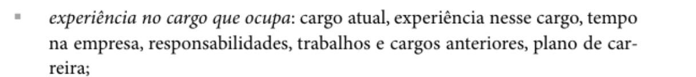
Tipo de defeito, se a resposta for Não conforme (Kalinowski e Spínola, 2007, p. 69): Omissão: falta no artefato um elemento importante que o item exige.
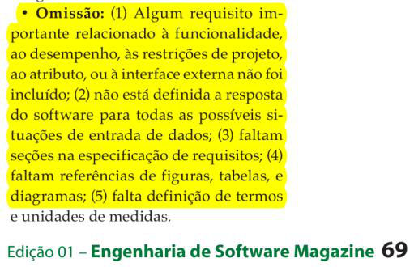
Item 2O perfil de usuário registra os idiomas que os usuários conhecem e os jargões ou o vocabulário próprio da sua profissão, atividade ou grupo social?ConformeEvidência: 3. Perfil de usuário, Tabela 7
Referência: Página: 135, Capítulo 5. Identificação de Necessidades dos Usuários e Requisitos de IHC (Seção 5.2). Livro: BARBOSA, S. D. J.; SILVA, B. S. Interação Humano-Computador. Rio de Janeiro: Elsevier, 2010.
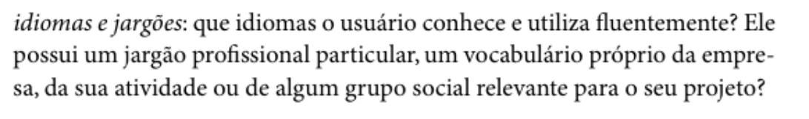
Tipo de defeito, se a resposta for Não conforme (Kalinowski e Spínola, 2007, p. 69): Omissão: falta no artefato um elemento importante que o item exige.
Item 3O perfil de usuário indica o quanto o usuário valoriza treinamento, o seu estilo de aprendizado preferido e o tempo que pode investir para aprender a usar o produto?ConformeEvidência: 3. Perfil de usuário, Tabela 7
Referência: Página: 135, Capítulo 5. Identificação de Necessidades dos Usuários e Requisitos de IHC (Seção 5.2). Livro: BARBOSA, S. D. J.; SILVA, B. S. Interação Humano-Computador. Rio de Janeiro: Elsevier, 2010.
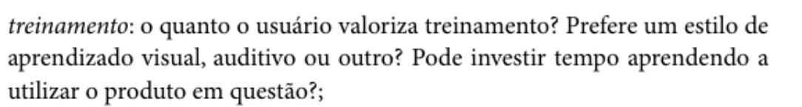
Tipo de defeito, se a resposta for Não conforme (Kalinowski e Spínola, 2007, p. 69): Omissão: falta no artefato um elemento importante que o item exige.
Item 4O plano de coleta de dados distingue os usuários primários (que usam o produto regularmente), os secundários (que o usam ocasionalmente) e os demais interessados afetados pelo sistema?ConformeEvidência: 3. Perfil de usuário, seção 3
Referência: Página: 136, Capítulo 5. Identificação de Necessidades dos Usuários e Requisitos de IHC (Seção 5.3). Livro: BARBOSA, S. D. J.; SILVA, B. S. Interação Humano-Computador. Rio de Janeiro: Elsevier, 2010.
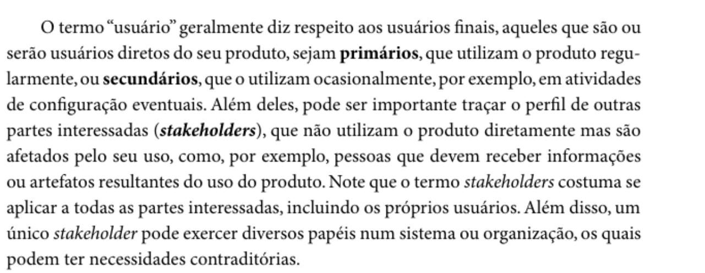
Tipo de defeito, se a resposta for Não conforme (Kalinowski e Spínola, 2007, p. 69): Omissão: falta no artefato um elemento importante que o item exige.
Item 5Os participantes escolhidos para a coleta de dados são fontes confiáveis, relevantes e representativas dos usuários e do seu trabalho?ConformeEvidência: 10 estudantes da UnB, usuários potenciais; a concentração em cursos da saúde é uma limitação (2. Coleta por brainstorming e aspectos éticos, Tabela 4)
Referência: Página: 135 e 136, Capítulo 5. Identificação de Necessidades dos Usuários e Requisitos de IHC (Seção 5.3). Livro: BARBOSA, S. D. J.; SILVA, B. S. Interação Humano-Computador. Rio de Janeiro: Elsevier, 2010.
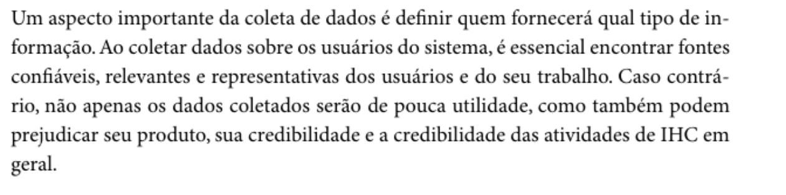
Tipo de defeito, se a resposta for Não conforme (Kalinowski e Spínola, 2007, p. 69): Omissão: falta no artefato um elemento importante que o item exige.
Item 6A seleção de participantes evita conhecidos, amigos, alunos ou subordinados do avaliador, para que essa relação não influencie nem contamine os dados?ConformeEvidência: Participantes abordados na Semana Universitária da UnB, no campus Darcy Ribeiro; só um de dez era conhecido de um integrante, sem proximidade (2. Coleta por brainstorming e aspectos éticos, Tabela 4)
Referência: Página: 308, Capítulo 9. Planejamento da Avaliação de IHC. Livro: BARBOSA, S. D. J.; SILVA, B. S. Interação Humano-Computador. Rio de Janeiro: Elsevier, 2010.
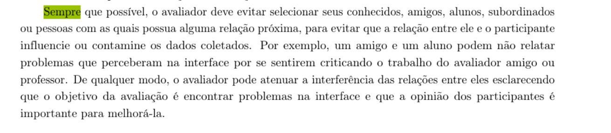
Tipo de defeito, se a resposta for Não conforme (Kalinowski e Spínola, 2007, p. 69): Outros: defeito que não se encaixa nos demais tipos, como um conteúdo na seção errada.
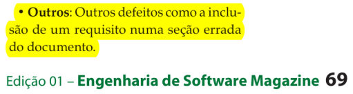
Item 7O plano de coleta de dados garante a confidencialidade dos dados brutos e o anonimato dos participantes nos relatórios, com o uso de códigos ou nomes fictícios?ConformeEvidência: Participantes só com código P01 a P10, sem os nomes ditos na gravação; gravação no YouTube como vídeo não listado, visível só para quem tem o link (2. Coleta por brainstorming e aspectos éticos, seção 6, DI-01 corrigida)
Referência: Página: 140, Capítulo 5. Identificação de Necessidades dos Usuários e Requisitos de IHC (Seção 5.4). Livro: BARBOSA, S. D. J.; SILVA, B. S. Interação Humano-Computador. Rio de Janeiro: Elsevier, 2010.
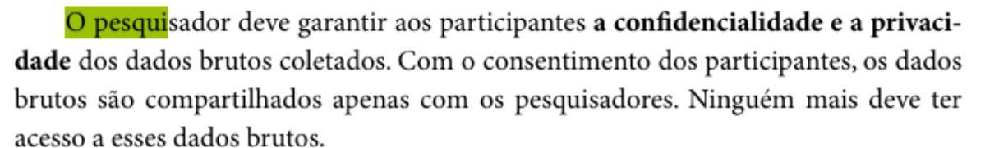
Tipo de defeito, se a resposta for Não conforme (Kalinowski e Spínola, 2007, p. 69): Omissão: falta no artefato um elemento importante que o item exige.
Item 8O participante é informado de que pode recusar a participação ou abandonar o estudo a qualquer momento, sem ser penalizado?ConformeEvidência: 2. Coleta por brainstorming e aspectos éticos, Tabela 6
Referência: Página: 141, Capítulo 5. Identificação de Necessidades dos Usuários e Requisitos de IHC (Seção 5.4). Livro: BARBOSA, S. D. J.; SILVA, B. S. Interação Humano-Computador. Rio de Janeiro: Elsevier, 2010.
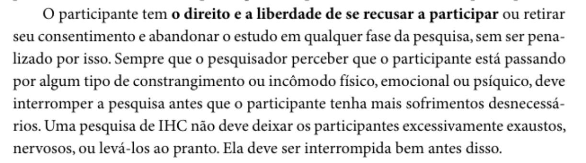
Tipo de defeito, se a resposta for Não conforme (Kalinowski e Spínola, 2007, p. 69): Omissão: falta no artefato um elemento importante que o item exige.
Item 9O planejamento da entrevista define o grau de estruturação (estruturada, semiestruturada ou não estruturada) e organiza um roteiro com os tópicos ou as perguntas?Não se aplicaEvidência: A técnica desta parte é o brainstorming, não a entrevista
Referência: Página: 146, Capítulo 5. Identificação de Necessidades dos Usuários e Requisitos de IHC (Seção 5.5.1). Livro: BARBOSA, S. D. J.; SILVA, B. S. Interação Humano-Computador. Rio de Janeiro: Elsevier, 2010.
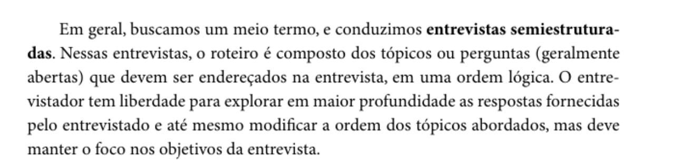
Tipo de defeito, se a resposta for Não conforme (Kalinowski e Spínola, 2007, p. 69): Omissão: falta no artefato um elemento importante que o item exige.
Item 10O roteiro e a conduta do entrevistador evitam influenciar as respostas com a formulação das perguntas, expressões faciais, gestos ou entonação de voz?Não se aplicaEvidência: Idem; no brainstorming, o desvio da pergunta inicial está registrado (2. Coleta por brainstorming e aspectos éticos, Tabela 4)
Referência: Página: 147, Capítulo 5. Identificação de Necessidades dos Usuários e Requisitos de IHC (Seção 5.5.1). Livro: BARBOSA, S. D. J.; SILVA, B. S. Interação Humano-Computador. Rio de Janeiro: Elsevier, 2010.
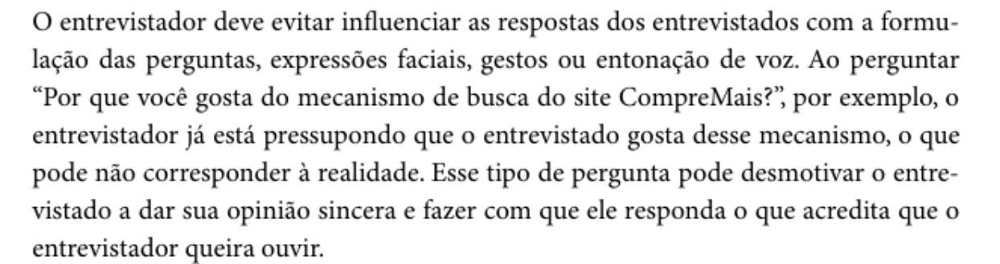
Tipo de defeito, se a resposta for Não conforme (Kalinowski e Spínola, 2007, p. 69): Ambiguidade: o artefato admite mais de uma interpretação.
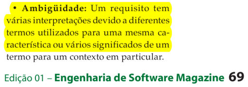
Item 11O procedimento pede ao participante permissão para gravar a sua voz ou imagem antes de começar qualquer gravação?ConformeEvidência: 2. Coleta por brainstorming e aspectos éticos, Tabela 6
Referência: Página: 140, Capítulo 5. Identificação de Necessidades dos Usuários e Requisitos de IHC (Seção 5.4). Livro: BARBOSA, S. D. J.; SILVA, B. S. Interação Humano-Computador. Rio de Janeiro: Elsevier, 2010.
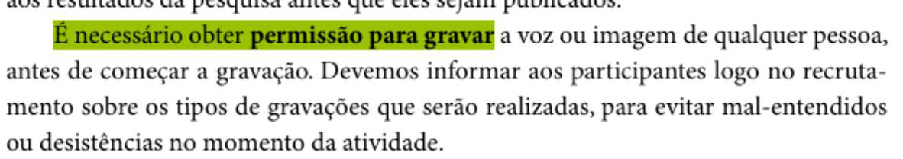
Tipo de defeito, se a resposta for Não conforme (Kalinowski e Spínola, 2007, p. 69): Omissão: falta no artefato um elemento importante que o item exige.
Item 12O planejamento estima quanto tempo o respondente leva para completar o questionário e verifica se esse tempo é adequado?Não se aplicaEvidência: Não houve questionário
Referência: Página: 171, Capítulo 5. Identificação de Necessidades dos Usuários e Requisitos de IHC. Livro: BARBOSA, S. D. J.; SILVA, B. S. Interação Humano-Computador. Rio de Janeiro: Elsevier, 2010.
Tipo de defeito, se a resposta for Não conforme (Kalinowski e Spínola, 2007, p. 69): Omissão: falta no artefato um elemento importante que o item exige.
Item 13A persona possui dados demográficos definidos, como idade, sexo e status socioeconômico?ConformeEvidência: 4. Persona Talita Farias, Tabela 10
Referência: Página: 137 (PDF disponibilizado no Aprender), Capítulo 7, Seção 7.2. Livro: BARBOSA, S. D. J. et al. Interação Humano-Computador e Experiência do Usuário, 2021 (capítulo 7, PDF disponibilizado no Aprender).
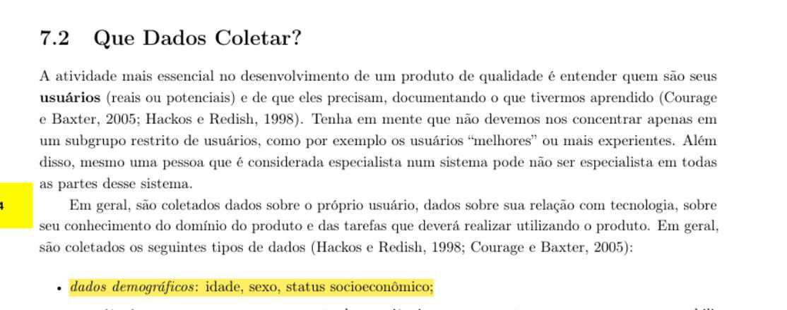
Tipo de defeito, se a resposta for Não conforme (Kalinowski e Spínola, 2007, p. 69): Omissão: falta no artefato um elemento importante que o item exige.
Item 14A persona detalha o nível educacional, o grau de instrução, a área de formação, os cursos realizados e o alfabetismo (o quão bem lê e a disposição para ler textos)?ConformeEvidência: 4. Persona Talita Farias, Tabela 10
Referência: Página: 137 (PDF disponibilizado no Aprender), Capítulo 7, Seção 7.2. Livro: BARBOSA, S. D. J. et al. Interação Humano-Computador e Experiência do Usuário, 2021 (capítulo 7, PDF disponibilizado no Aprender).
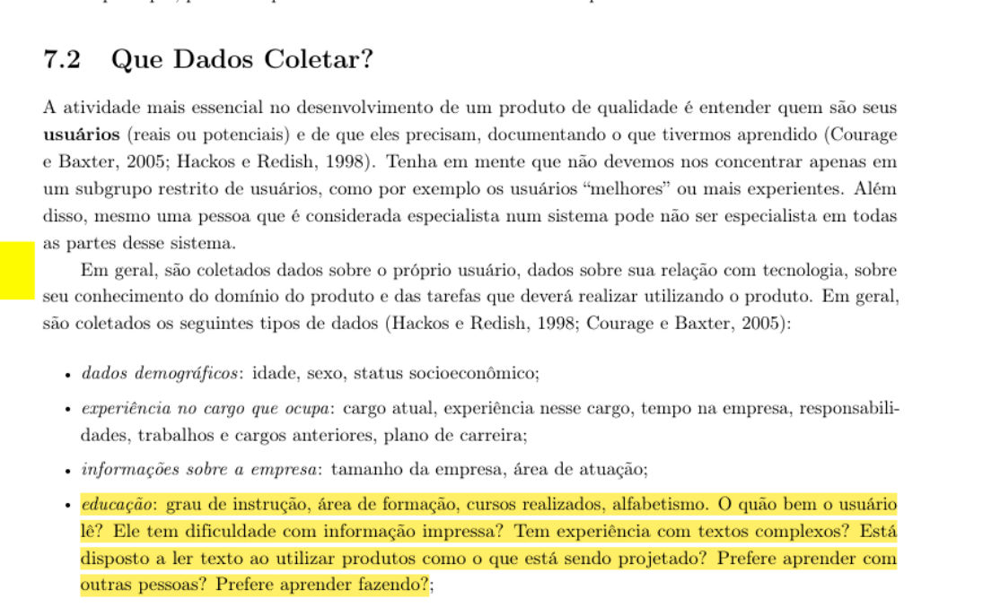
Tipo de defeito, se a resposta for Não conforme (Kalinowski e Spínola, 2007, p. 69): Omissão: falta no artefato um elemento importante que o item exige.
Item 15A persona descreve a experiência com computadores, com o alfabetismo computacional, a habilidade, os anos de experiência e os sistemas e equipamentos que conhece e usa?ConformeEvidência: 4. Persona Talita Farias, Tabela 10
Referência: Página: 137 (PDF disponibilizado no Aprender), Capítulo 7, Seção 7.2. Livro: BARBOSA, S. D. J. et al. Interação Humano-Computador e Experiência do Usuário, 2021 (capítulo 7, PDF disponibilizado no Aprender).
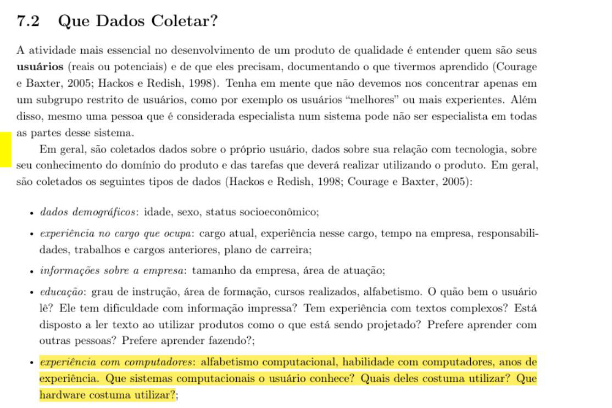
Tipo de defeito, se a resposta for Não conforme (Kalinowski e Spínola, 2007, p. 69): Omissão: falta no artefato um elemento importante que o item exige.
Item 16A persona apresenta a experiência com produtos específicos ou ferramentas semelhantes, incluindo concorrentes, hábitos de uso, preferências e descontentamentos?ConformeEvidência: 4. Persona Talita Farias, Tabela 10
Referência: Página: 137 (PDF disponibilizado no Aprender), Capítulo 7, Seção 7.2. Livro: BARBOSA, S. D. J. et al. Interação Humano-Computador e Experiência do Usuário, 2021 (capítulo 7, PDF disponibilizado no Aprender).
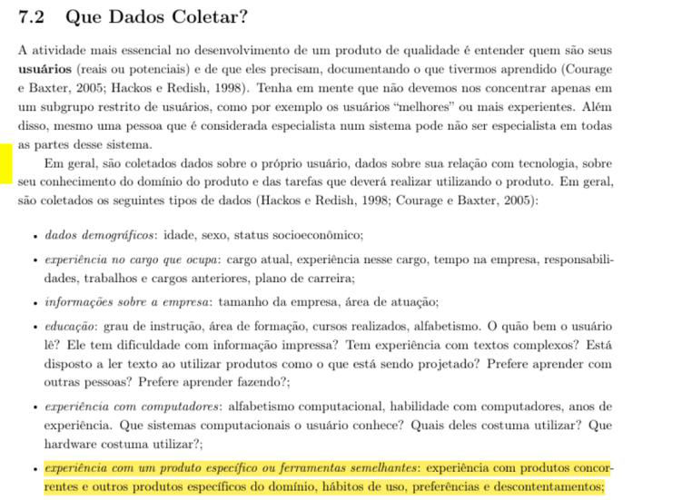
Tipo de defeito, se a resposta for Não conforme (Kalinowski e Spínola, 2007, p. 69): Omissão: falta no artefato um elemento importante que o item exige.
Item 17A persona detalha a tecnologia disponível para o usuário, com o equipamento (tamanho e resolução da tela, processamento) e os programas e ferramentas de acesso?ConformeEvidência: 4. Persona Talita Farias, Tabela 10
Referência: Página: 137 (PDF disponibilizado no Aprender), Capítulo 7, Seção 7.2. Livro: BARBOSA, S. D. J. et al. Interação Humano-Computador e Experiência do Usuário, 2021 (capítulo 7, PDF disponibilizado no Aprender).
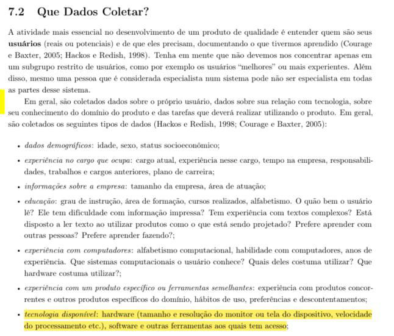
Tipo de defeito, se a resposta for Não conforme (Kalinowski e Spínola, 2007, p. 69): Omissão: falta no artefato um elemento importante que o item exige.
Item 18A persona descreve atitudes e valores do usuário, como preferências de produto, medo de tecnologia e disposição para assumir riscos e explorar novidades ou preferência por caminhos já testados?ConformeEvidência: 4. Persona Talita Farias, Tabela 10
Referência: Página: 137 e 138 (PDF disponibilizado no Aprender), Capítulo 7, Seção 7.2. Livro: BARBOSA, S. D. J. et al. Interação Humano-Computador e Experiência do Usuário, 2021 (capítulo 7, PDF disponibilizado no Aprender).
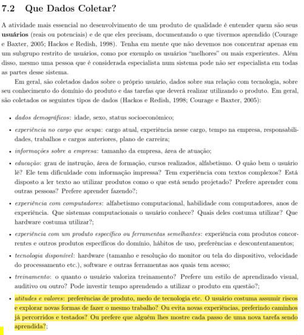
Tipo de defeito, se a resposta for Não conforme (Kalinowski e Spínola, 2007, p. 69): Omissão: falta no artefato um elemento importante que o item exige.
Item 19A persona define o quanto o usuário conhece do domínio e se é esperado que ele se torne especialista?ConformeEvidência: 4. Persona Talita Farias, Tabela 10
Referência: Página: 138 (PDF disponibilizado no Aprender), Capítulo 7, Seção 7.2. Livro: BARBOSA, S. D. J. et al. Interação Humano-Computador e Experiência do Usuário, 2021 (capítulo 7, PDF disponibilizado no Aprender).
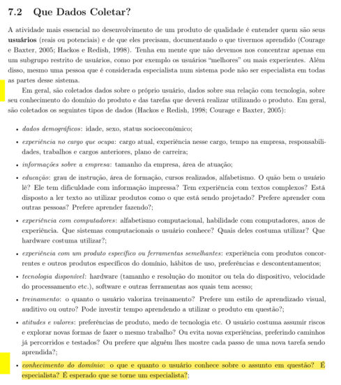
Tipo de defeito, se a resposta for Não conforme (Kalinowski e Spínola, 2007, p. 69): Omissão: falta no artefato um elemento importante que o item exige.
Item 20A persona especifica os principais objetivos do usuário e como eles são alcançados atualmente?ConformeEvidência: 4. Persona Talita Farias, Tabela 10
Referência: Página: 138 (PDF disponibilizado no Aprender), Capítulo 7, Seção 7.2. Livro: BARBOSA, S. D. J. et al. Interação Humano-Computador e Experiência do Usuário, 2021 (capítulo 7, PDF disponibilizado no Aprender).
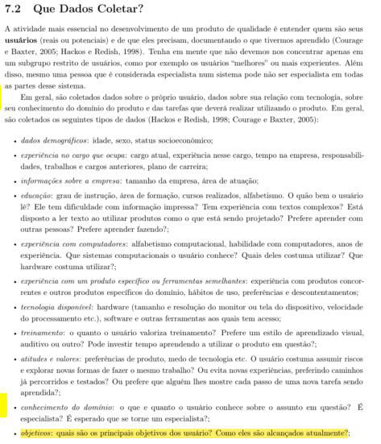
Tipo de defeito, se a resposta for Não conforme (Kalinowski e Spínola, 2007, p. 69): Omissão: falta no artefato um elemento importante que o item exige.
Item 21A persona descreve as tarefas que precisam ser apoiadas, quais são primárias e quais são secundárias, com a frequência, o tempo de realização e a experiência em tarefas semelhantes?ConformeEvidência: 4. Persona Talita Farias, Tabela 11 (DI-02 corrigida)
Referência: Página: 138 (PDF disponibilizado no Aprender), Capítulo 7, Seção 7.2. Livro: BARBOSA, S. D. J. et al. Interação Humano-Computador e Experiência do Usuário, 2021 (capítulo 7, PDF disponibilizado no Aprender).
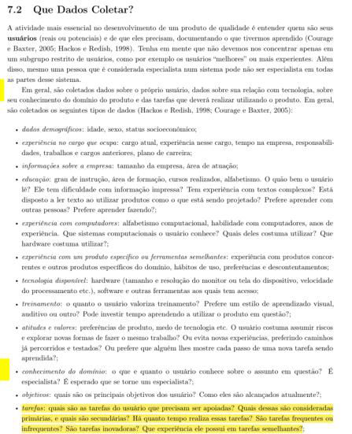
Tipo de defeito, se a resposta for Não conforme (Kalinowski e Spínola, 2007, p. 69): Omissão: falta no artefato um elemento importante que o item exige.
Item 22Cada cenário está escrito como uma narrativa concreta e rica em detalhes de contexto, isto é, uma história sobre pessoas realizando uma atividade, e não como uma lista abstrata de funcionalidades ou de requisitos?ConformeEvidência: 5. Cenário da Avaliação de Disciplinas, seções 2 e 3
Referência: Página: 183, Capítulo 6. Organização do Espaço de Problema. Livro: BARBOSA, S. D. J.; SILVA, B. S. Interação Humano-Computador. Rio de Janeiro: Elsevier, 2010.
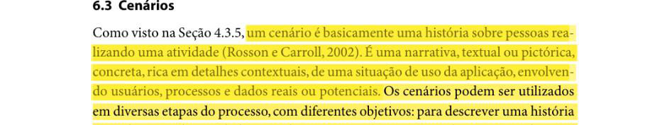
Tipo de defeito, se a resposta for Não conforme (Kalinowski e Spínola, 2007, p. 69): Ambiguidade: o artefato admite mais de uma interpretação.
Item 23O tipo de cada cenário está identificado e é coerente com a etapa do projeto: cenário de problema, de atividade, de informação ou de interação?ConformeEvidência: Cenário 6A de problema e 6B de interação
Referência: Página: 113 e 114, Capítulo 4. Processos de Design de IHC. Livro: BARBOSA, S. D. J.; SILVA, B. S. Interação Humano-Computador. Rio de Janeiro: Elsevier, 2010.
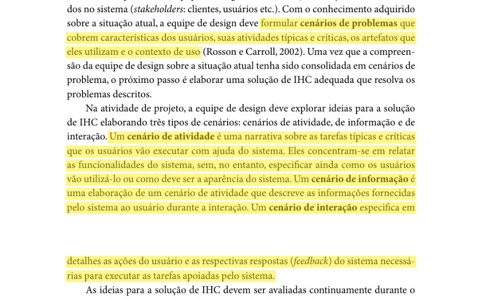
Tipo de defeito, se a resposta for Não conforme (Kalinowski e Spínola, 2007, p. 69): Inconsistência: partes do artefato, ou o artefato e outro artefato do projeto, são conflitantes.
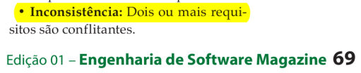
Item 24Cada cenário traz os componentes de identificação: um título breve, a relação dos atores, uma descrição da situação inicial e referências a outros cenários que levem ao mesmo objetivo, quando existirem?ConformeEvidência: Cabeçalho de cada cenário
Referência: Página: 183, Capítulo 6. Organização do Espaço de Problema. Livro: BARBOSA, S. D. J.; SILVA, B. S. Interação Humano-Computador. Rio de Janeiro: Elsevier, 2010.
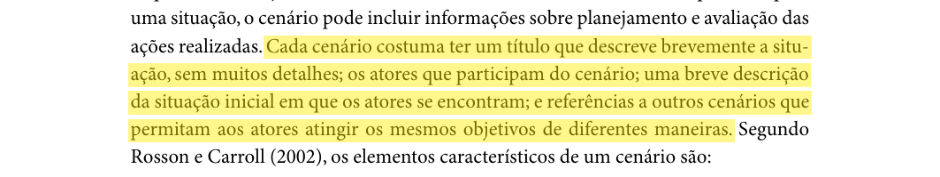
Tipo de defeito, se a resposta for Não conforme (Kalinowski e Spínola, 2007, p. 69): Omissão: falta no artefato um elemento importante que o item exige.
Item 25Em cada cenário é possível identificar um ator principal e um objetivo principal, e a história tem um enredo com uma sequência de ações e eventos (o que os usuários fazem, o que acontece com eles e que mudanças ocorrem no ambiente)?ConformeEvidência: 5. Cenário da Avaliação de Disciplinas, Tabela 12
Referência: Página: 183, Capítulo 6. Organização do Espaço de Problema. Livro: BARBOSA, S. D. J.; SILVA, B. S. Interação Humano-Computador. Rio de Janeiro: Elsevier, 2010.
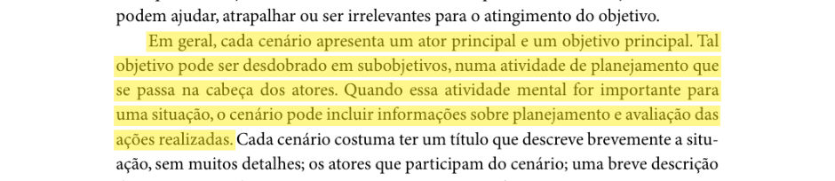
Tipo de defeito, se a resposta for Não conforme (Kalinowski e Spínola, 2007, p. 69): Omissão: falta no artefato um elemento importante que o item exige.
Item 26Cada cenário contém os sete elementos característicos: ambiente ou contexto, atores, objetivos, planejamento, ações, eventos e avaliação?ConformeEvidência: 5. Cenário da Avaliação de Disciplinas, Tabela 12 (DI-03 corrigida)
Referência: Página: 183 e 184, Capítulo 6. Organização do Espaço de Problema. Livro: BARBOSA, S. D. J.; SILVA, B. S. Interação Humano-Computador. Rio de Janeiro: Elsevier, 2010.
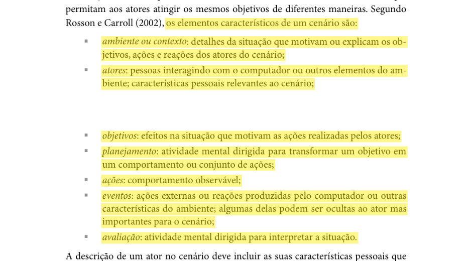
Tipo de defeito, se a resposta for Não conforme (Kalinowski e Spínola, 2007, p. 69): Omissão: falta no artefato um elemento importante que o item exige.
Item 27A descrição de cada ator inclui as características pessoais relevantes para o cenário e, quando o projeto tem personas, os atores são as próprias personas, com o mesmo nome?ConformeEvidência: Talita Farias nos dois cenários
Referência: Página: 184, Capítulo 6. Organização do Espaço de Problema. Livro: BARBOSA, S. D. J.; SILVA, B. S. Interação Humano-Computador. Rio de Janeiro: Elsevier, 2010.
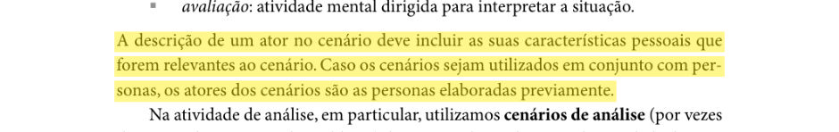
Tipo de defeito, se a resposta for Não conforme (Kalinowski e Spínola, 2007, p. 69): Inconsistência: partes do artefato, ou o artefato e outro artefato do projeto, são conflitantes.
Item 28O conjunto de cenários inclui exceções, isto é, ao menos um cenário com eventos raros ou situações extremas (um dado faltando, um erro, uma interrupção da tarefa) em que o produto pode se tornar problemático?ConformeEvidência: Falha no envio e disciplina já avaliada no Cenário 6B
Referência: Página: 185, Capítulo 6. Organização do Espaço de Problema. Livro: BARBOSA, S. D. J.; SILVA, B. S. Interação Humano-Computador. Rio de Janeiro: Elsevier, 2010.
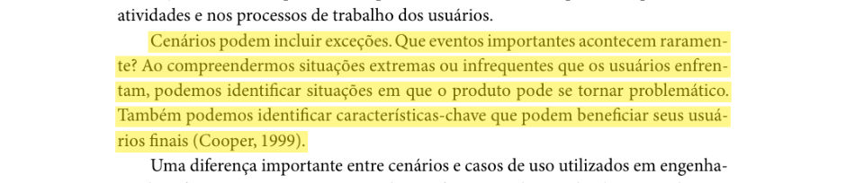
Tipo de defeito, se a resposta for Não conforme (Kalinowski e Spínola, 2007, p. 69): Omissão: falta no artefato um elemento importante que o item exige.
Item 29Cada cenário descreve um ator específico realizando ações específicas e segue apenas um dos caminhos possíveis da atividade, diferentemente de um caso de uso, que lista todas as ações e fluxos alternativos?ConformeEvidência: Cada cenário segue um caminho; as variantes ficam na HTA e na CTT
Referência: Página: 185, Capítulo 6. Organização do Espaço de Problema. Livro: BARBOSA, S. D. J.; SILVA, B. S. Interação Humano-Computador. Rio de Janeiro: Elsevier, 2010.
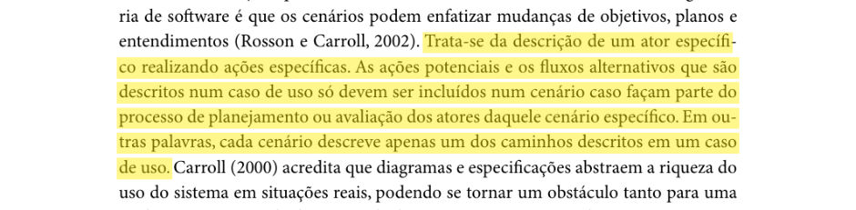
Tipo de defeito, se a resposta for Não conforme (Kalinowski e Spínola, 2007, p. 69): Informação estranha: o artefato traz informação desnecessária ou que não é usada.
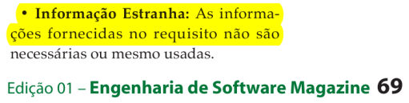
Item 30O conjunto de cenários é representativo do produto, cobrindo os cinco tópicos de Cooper: ciclo de vida do processo, segmentos de público, funções do produto, variantes de uma situação de tarefa e métodos para realizar uma tarefa?ConformeEvidência: No escopo da funcionalidade: antes e depois da matrícula, consultar e avaliar, com e sem a funcionalidade, busca e lista
Referência: Página: 188 e 189, Capítulo 6. Organização do Espaço de Problema. Livro: BARBOSA, S. D. J.; SILVA, B. S. Interação Humano-Computador. Rio de Janeiro: Elsevier, 2010.
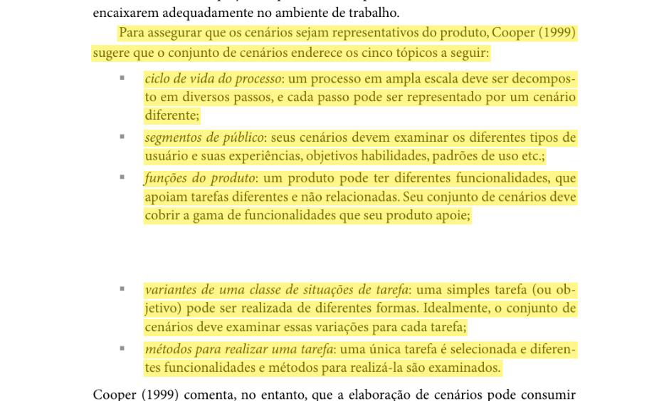
Tipo de defeito, se a resposta for Não conforme (Kalinowski e Spínola, 2007, p. 69): Omissão: falta no artefato um elemento importante que o item exige.
Item 31Os cenários de uso diário, com as tarefas principais e mais frequentes, foram elaborados com prioridade, deixando os de tarefas secundárias para quando houver tempo?ConformeEvidência: Os dois cenários tratam das tarefas primárias da Talita
Referência: Página: 189, Capítulo 6. Organização do Espaço de Problema. Livro: BARBOSA, S. D. J.; SILVA, B. S. Interação Humano-Computador. Rio de Janeiro: Elsevier, 2010.
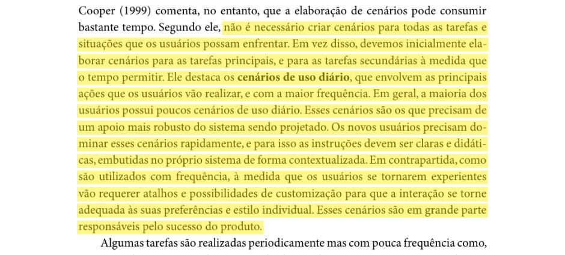
Tipo de defeito, se a resposta for Não conforme (Kalinowski e Spínola, 2007, p. 69): Informação estranha: o artefato traz informação desnecessária ou que não é usada.
Item 32A HTA define o objetivo de alto nível (o estado final desejado pelo usuário) e o decompõe em subobjetivos mutuamente exclusivos e exaustivos, sem sobreposição?ConformeEvidência: 6. HTA da Avaliação de Disciplinas, Figura 15
Referência: Página: 192, Capítulo 6. Organização do Espaço de Problema. Livro: BARBOSA, S. D. J.; SILVA, B. S. Interação Humano-Computador. Rio de Janeiro: Elsevier, 2010.
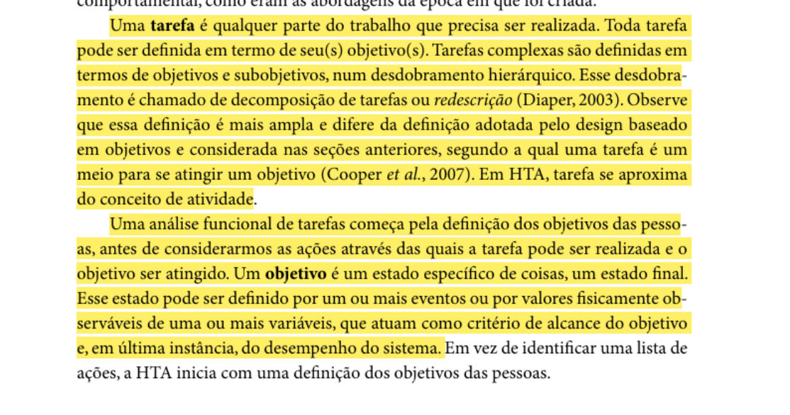
Tipo de defeito, se a resposta for Não conforme (Kalinowski e Spínola, 2007, p. 69): Inconsistência: partes do artefato, ou o artefato e outro artefato do projeto, são conflitantes.
Item 33A HTA especifica os planos que definem a ordem dos subobjetivos, indicando se há sequência fixa, regra de seleção dependente das circunstâncias ou execução em paralelo?ConformeEvidência: 6. HTA da Avaliação de Disciplinas, Tabela 13 (DI-04 corrigida)
Referência: Página: 192 e 193, Capítulo 6. Organização do Espaço de Problema. Livro: BARBOSA, S. D. J.; SILVA, B. S. Interação Humano-Computador. Rio de Janeiro: Elsevier, 2010.
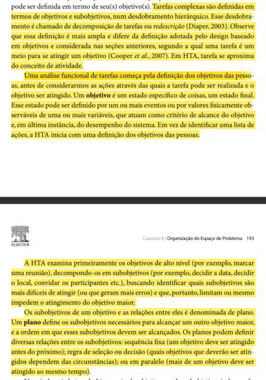
Tipo de defeito, se a resposta for Não conforme (Kalinowski e Spínola, 2007, p. 69): Omissão: falta no artefato um elemento importante que o item exige.
Item 34As operações do nível mais baixo da hierarquia estão especificadas com as circunstâncias de ativação (entradas), as ações a desempenhar e as condições de satisfação do estado final (feedback)?ConformeEvidência: 6. HTA da Avaliação de Disciplinas, Tabela 14
Referência: Página: 193, Capítulo 6. Organização do Espaço de Problema. Livro: BARBOSA, S. D. J.; SILVA, B. S. Interação Humano-Computador. Rio de Janeiro: Elsevier, 2010.
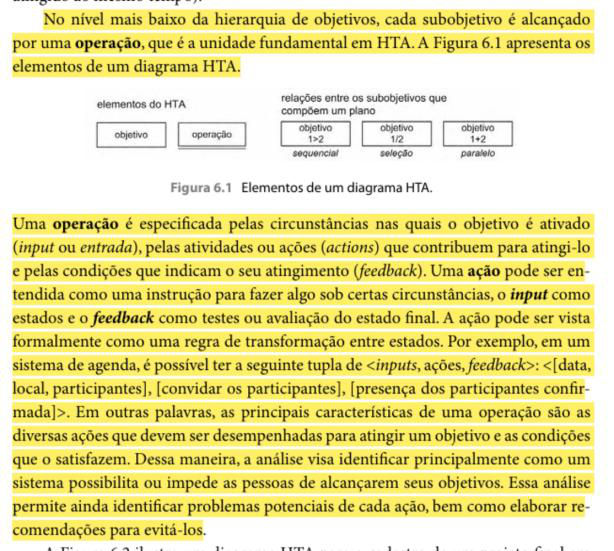
Tipo de defeito, se a resposta for Não conforme (Kalinowski e Spínola, 2007, p. 69): Omissão: falta no artefato um elemento importante que o item exige.
Item 35A HTA é apresentada como diagrama hierárquico e como tabela equivalente, com colunas para objetivos ou operações, plano, entradas, ações e feedback?ConformeEvidência: 6. HTA da Avaliação de Disciplinas, Figura 15 e Tabela 14
Referência: Página: 193, Capítulo 6. Organização do Espaço de Problema. Livro: BARBOSA, S. D. J.; SILVA, B. S. Interação Humano-Computador. Rio de Janeiro: Elsevier, 2010.
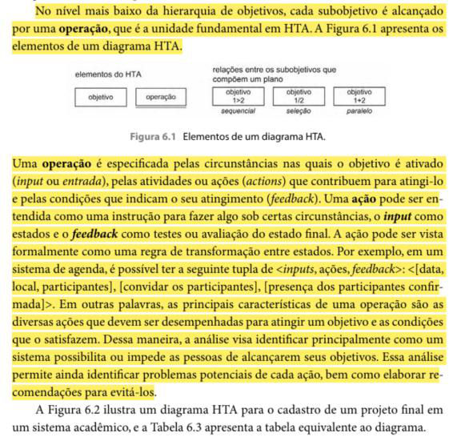
Tipo de defeito, se a resposta for Não conforme (Kalinowski e Spínola, 2007, p. 69): Omissão: falta no artefato um elemento importante que o item exige.
Item 36Quando a tarefa envolve mais de um agente (diferentes papéis de usuário ou usuário e sistema), a HTA separa as ações de cada agente em colunas distintas?ConformeEvidência: Colunas do estudante e do sistema na Tabela 14
Referência: Página: 191, Capítulo 6. Organização do Espaço de Problema. Livro: BARBOSA, S. D. J.; SILVA, B. S. Interação Humano-Computador. Rio de Janeiro: Elsevier, 2010.
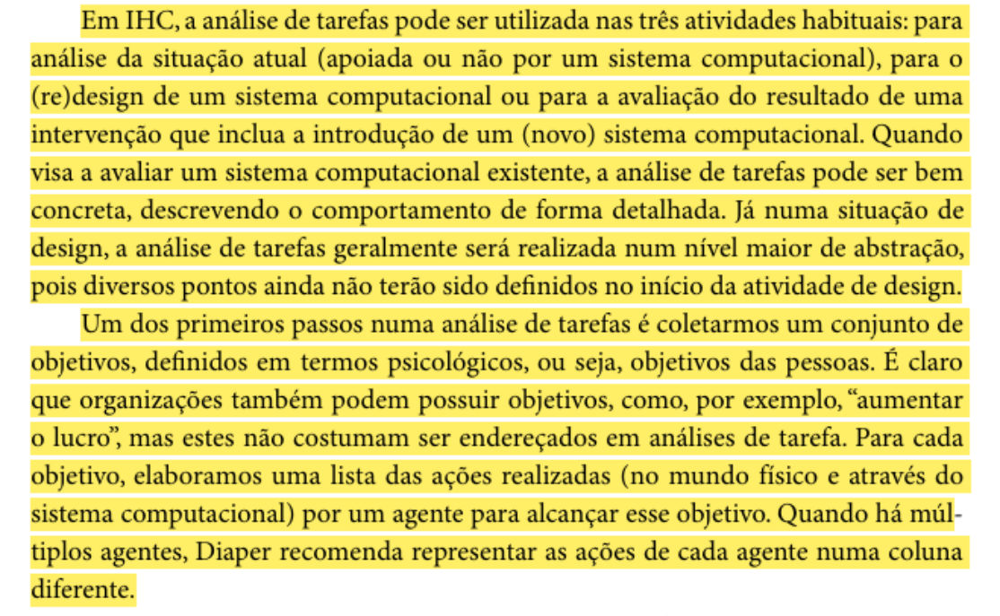
Tipo de defeito, se a resposta for Não conforme (Kalinowski e Spínola, 2007, p. 69): Omissão: falta no artefato um elemento importante que o item exige.
Item 37A HTA identifica problemas ou dificuldades de desempenho em cada subobjetivo ou operação (gargalos, etapas confusas, pontos propensos a erro) e apresenta recomendações de design para evitá-los?ConformeEvidência: 6. HTA da Avaliação de Disciplinas, Tabela 15
Referência: Página: 193, Capítulo 6. Organização do Espaço de Problema. Livro: BARBOSA, S. D. J.; SILVA, B. S. Interação Humano-Computador. Rio de Janeiro: Elsevier, 2010.
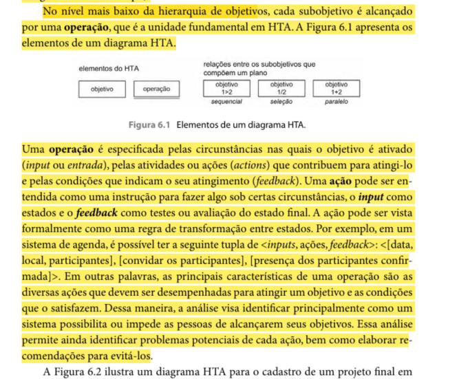
Tipo de defeito, se a resposta for Não conforme (Kalinowski e Spínola, 2007, p. 69): Omissão: falta no artefato um elemento importante que o item exige.
Item 38A HTA indica que a decomposição das tarefas e os planos foram validados com as partes interessadas (usuários representativos e especialistas)?ConformeEvidência: Checagem com P1 (Entrega 5), sessões com P1 a P5 (Entrega 7) e validação com o professor da disciplina, especialista em IHC
Referência: Página: 193, Capítulo 6. Organização do Espaço de Problema. Livro: BARBOSA, S. D. J.; SILVA, B. S. Interação Humano-Computador. Rio de Janeiro: Elsevier, 2010.
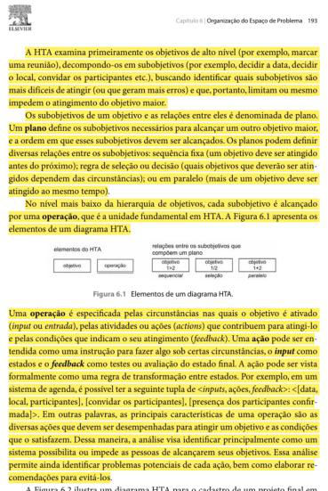
Tipo de defeito, se a resposta for Não conforme (Kalinowski e Spínola, 2007, p. 69): Omissão: falta no artefato um elemento importante que o item exige.
Item 39A HTA examina e antecipa erros humanos nas operações com base na classificação de Reason (desempenho baseado em habilidades, em regras ou em conhecimento)?ConformeEvidência: 6. HTA da Avaliação de Disciplinas, Tabela 16
Referência: Página: 196, Capítulo 6. Organização do Espaço de Problema. Livro: BARBOSA, S. D. J.; SILVA, B. S. Interação Humano-Computador. Rio de Janeiro: Elsevier, 2010.
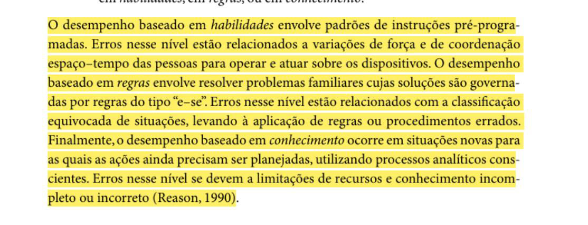
Tipo de defeito, se a resposta for Não conforme (Kalinowski e Spínola, 2007, p. 69): Omissão: falta no artefato um elemento importante que o item exige.
Item 40Cada tarefa do modelo CTT está classificada em um dos quatro tipos: tarefa do usuário (realizada fora do sistema), tarefa do sistema (processamento sem interação com o usuário), tarefa interativa (diálogo usuário-sistema) ou tarefa abstrata (composição de tarefas que auxilia a decomposição)?ConformeEvidência: 7. CTT da Avaliação de Disciplinas, Tabela 17
Referência: Página: 203, Capítulo 6. Organização do Espaço de Problema. Livro: BARBOSA, S. D. J.; SILVA, B. S. Interação Humano-Computador. Rio de Janeiro: Elsevier, 2010.
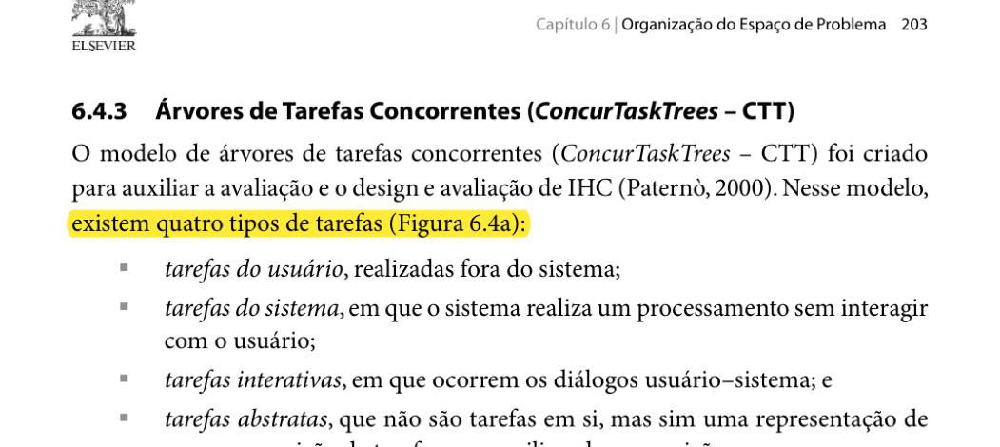
Tipo de defeito, se a resposta for Não conforme (Kalinowski e Spínola, 2007, p. 69): Fato incorreto: o artefato descreve algo que não é verdadeiro nas condições do projeto.
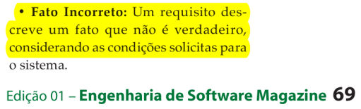
Item 41A hierarquia do diagrama CTT foi construída de modo que uma tarefa-pai só é considerada realizada quando as tarefas-filhas correspondentes tiverem sido realizadas?ConformeEvidência: Envio como irmão de Preencher e nó das notas decomposto (DI-05 corrigida)
Referência: Página: 203, Capítulo 6. Organização do Espaço de Problema. Livro: BARBOSA, S. D. J.; SILVA, B. S. Interação Humano-Computador. Rio de Janeiro: Elsevier, 2010.
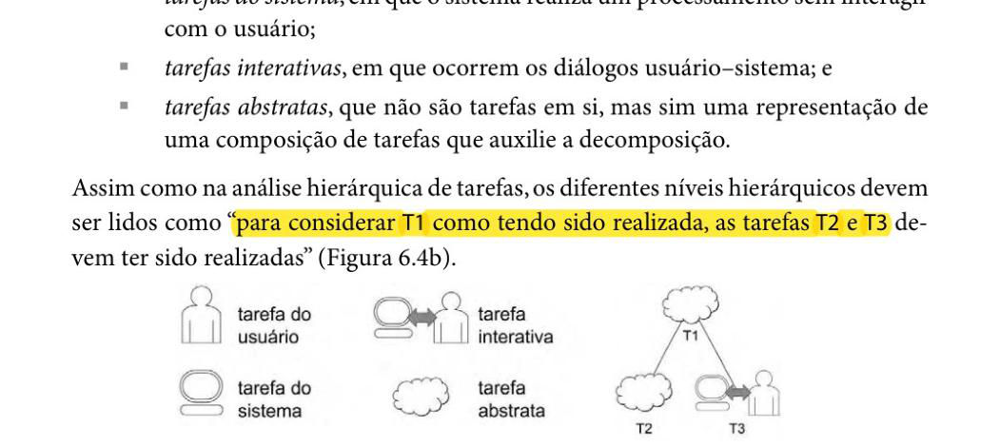
Tipo de defeito, se a resposta for Não conforme (Kalinowski e Spínola, 2007, p. 69): Fato incorreto: o artefato descreve algo que não é verdadeiro nas condições do projeto.
Item 42A relação de ativação (T1 >> T2) foi usada corretamente para indicar que a segunda tarefa só pode iniciar após a primeira terminar?ConformeEvidência: 7. CTT da Avaliação de Disciplinas, Tabela 18
Referência: Página: 203, Capítulo 6. Organização do Espaço de Problema. Livro: BARBOSA, S. D. J.; SILVA, B. S. Interação Humano-Computador. Rio de Janeiro: Elsevier, 2010.
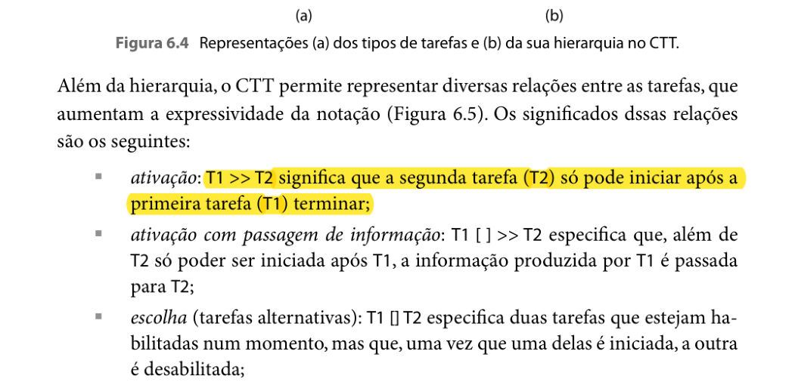
Tipo de defeito, se a resposta for Não conforme (Kalinowski e Spínola, 2007, p. 69): Fato incorreto: o artefato descreve algo que não é verdadeiro nas condições do projeto.
Item 43A relação de ativação com passagem de informação (T1 []>> T2) foi usada corretamente para indicar que, além de a segunda tarefa só iniciar após a primeira, a informação produzida pela primeira é passada para a segunda?ConformeEvidência: 7. CTT da Avaliação de Disciplinas, Tabela 18
Referência: Página: 203, Capítulo 6. Organização do Espaço de Problema. Livro: BARBOSA, S. D. J.; SILVA, B. S. Interação Humano-Computador. Rio de Janeiro: Elsevier, 2010.
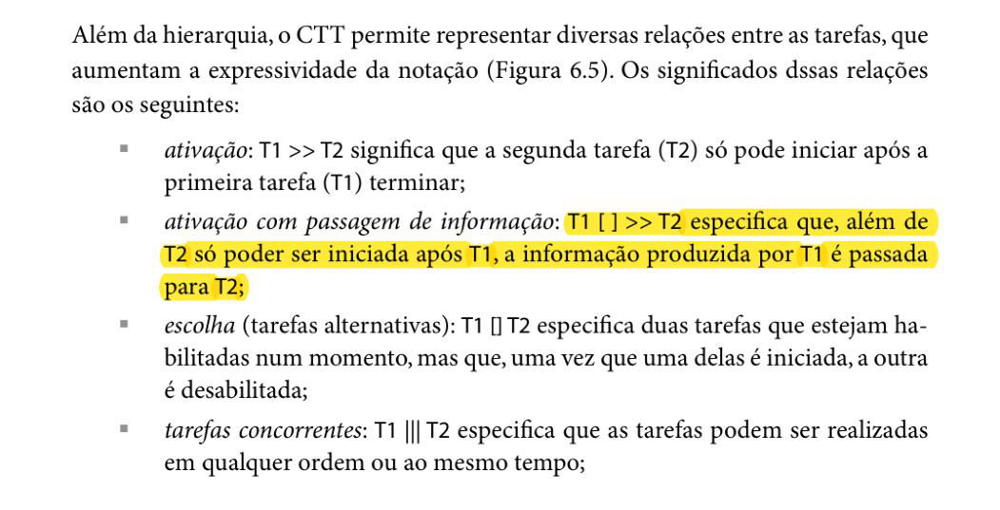
Tipo de defeito, se a resposta for Não conforme (Kalinowski e Spínola, 2007, p. 69): Fato incorreto: o artefato descreve algo que não é verdadeiro nas condições do projeto.
Item 44A relação de escolha (T1 [] T2) foi usada corretamente para indicar duas tarefas habilitadas ao mesmo tempo, das quais, ao ser iniciada uma, a outra é desabilitada?ConformeEvidência: 7. CTT da Avaliação de Disciplinas, Tabela 18
Referência: Página: 203, Capítulo 6. Organização do Espaço de Problema. Livro: BARBOSA, S. D. J.; SILVA, B. S. Interação Humano-Computador. Rio de Janeiro: Elsevier, 2010.
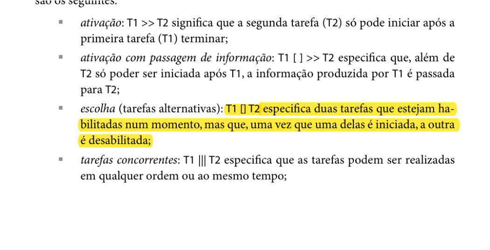
Tipo de defeito, se a resposta for Não conforme (Kalinowski e Spínola, 2007, p. 69): Fato incorreto: o artefato descreve algo que não é verdadeiro nas condições do projeto.
Item 45A relação de tarefas concorrentes (T1 ||| T2) foi usada corretamente para indicar que as tarefas podem ser realizadas em qualquer ordem ou ao mesmo tempo?ConformeEvidência: 7. CTT da Avaliação de Disciplinas, Tabela 18
Referência: Página: 203, Capítulo 6. Organização do Espaço de Problema. Livro: BARBOSA, S. D. J.; SILVA, B. S. Interação Humano-Computador. Rio de Janeiro: Elsevier, 2010.
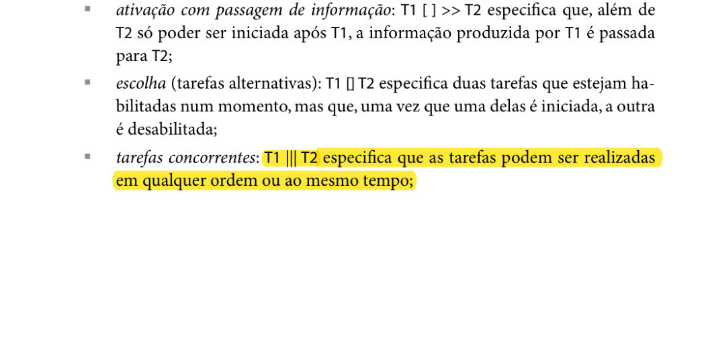
Tipo de defeito, se a resposta for Não conforme (Kalinowski e Spínola, 2007, p. 69): Fato incorreto: o artefato descreve algo que não é verdadeiro nas condições do projeto.
Item 46A relação de tarefas concorrentes e comunicantes (T1 |[]| T2) foi usada corretamente para indicar que, além de poderem ser realizadas em qualquer ordem ou ao mesmo tempo, as tarefas trocam informações entre si?ConformeEvidência: 7. CTT da Avaliação de Disciplinas, Tabela 18
Referência: Página: 204, Capítulo 6. Organização do Espaço de Problema. Livro: BARBOSA, S. D. J.; SILVA, B. S. Interação Humano-Computador. Rio de Janeiro: Elsevier, 2010.
Tipo de defeito, se a resposta for Não conforme (Kalinowski e Spínola, 2007, p. 69): Fato incorreto: o artefato descreve algo que não é verdadeiro nas condições do projeto.
Item 47A relação de tarefas independentes (T1 |=| T2) foi usada corretamente para indicar que as tarefas podem ser realizadas em qualquer ordem, mas que, iniciada uma delas, ela precisa terminar antes que a outra comece?ConformeEvidência: 7. CTT da Avaliação de Disciplinas, Tabela 18
Referência: Página: 204, Capítulo 6. Organização do Espaço de Problema. Livro: BARBOSA, S. D. J.; SILVA, B. S. Interação Humano-Computador. Rio de Janeiro: Elsevier, 2010.
Tipo de defeito, se a resposta for Não conforme (Kalinowski e Spínola, 2007, p. 69): Fato incorreto: o artefato descreve algo que não é verdadeiro nas condições do projeto.
Item 48A relação de desativação (T1 [> T2) foi usada corretamente para indicar que a primeira tarefa é completamente interrompida pela segunda?ConformeEvidência: 7. CTT da Avaliação de Disciplinas, Tabela 18
Referência: Página: 204, Capítulo 6. Organização do Espaço de Problema. Livro: BARBOSA, S. D. J.; SILVA, B. S. Interação Humano-Computador. Rio de Janeiro: Elsevier, 2010.
Tipo de defeito, se a resposta for Não conforme (Kalinowski e Spínola, 2007, p. 69): Fato incorreto: o artefato descreve algo que não é verdadeiro nas condições do projeto.
Item 49A relação de suspensão e retomada (T1 |> T2) foi usada corretamente para indicar que a primeira tarefa pode ser interrompida pela segunda e é retomada do ponto em que parou assim que a segunda terminar?ConformeEvidência: 7. CTT da Avaliação de Disciplinas, Tabela 18
Referência: Página: 204, Capítulo 6. Organização do Espaço de Problema. Livro: BARBOSA, S. D. J.; SILVA, B. S. Interação Humano-Computador. Rio de Janeiro: Elsevier, 2010.
Tipo de defeito, se a resposta for Não conforme (Kalinowski e Spínola, 2007, p. 69): Fato incorreto: o artefato descreve algo que não é verdadeiro nas condições do projeto.
Fonte: Victor Andreozzi de La Rocque Couto (2026), a partir da lista de verificação geral do grupo (ver referências).
Dos 49 itens, 46 estão conformes, nenhum não conforme e 3 não se aplicam.
3. Lista de verificação do plano de ensino
| Item | Pergunta | Resposta | Evidência |
|---|---|---|---|
| 1 | O perfil do usuário é definido por mais de uma forma? | Sim | Brainstorming (2. Coleta por brainstorming e aspectos éticos) e perfis do grupo, vindos de entrevistas e grupos de foco (3. Perfil de usuário) |
| 2 | O perfil possui os atributos de um perfil, com referência e foto? | Sim | 3. Perfil de usuário, Figuras 6 e 7 e Tabela 7 |
| 3 | O perfil define os grupos de atributos (idade, experiência, atitudes, tarefas primárias), com referência e foto? | Sim | 3. Perfil de usuário, Figura 8, Tabela 8 e Tabela 9 |
| 4 | Considera aspectos éticos de pesquisas envolvendo pessoas, com referência e foto? | Sim | 2. Coleta por brainstorming e aspectos éticos, seção 5 |
| 5 | Os quatro princípios, com referência e foto? | Sim | 2. Coleta por brainstorming e aspectos éticos, Figura 3 e Tabela 6 |
| 6 | Solicita permissão para gravar a voz ou a imagem antes de começar? | Sim | 2. Coleta por brainstorming e aspectos éticos, Figura 4 e Tabela 6 |
| 7 | O termo de consentimento livre e esclarecido, com referência e foto? | Sim | 2. Coleta por brainstorming e aspectos éticos, Figura 5 e Tabela 6; os termos assinados não são publicados |
| 8 | No mínimo duas técnicas de coleta de dados, com referência e foto? | Sim | No grupo: brainstorming, grupo de foco e entrevista; nesta parte: brainstorming (2. Coleta por brainstorming e aspectos éticos, Figuras 1 e 2) |
| 9 | Os cenários, com referência e foto? | Sim | 5. Cenário da Avaliação de Disciplinas, Figuras 10 e 11 |
| 10 | A análise de tarefas, com referência e foto? | Sim | 6. HTA da Avaliação de Disciplinas e 7. CTT da Avaliação de Disciplinas, Figuras 12 a 14, 16 e 17 |
| 11 | Uma atividade do integrante modelada em ao menos duas técnicas (HTA e GOMS/CTT)? | Sim | Avaliação de Disciplinas em HTA (Figura 15) e em CTT (Figuras 18 a 20) |
| 12 | Utilizaram alguma técnica para especificar as tarefas? | Sim | HTA e CTT |
Fonte: Victor Andreozzi de La Rocque Couto (2026), a partir da lista de verificação da Entrega 2 sugerida no plano de ensino.
4. Pendências
- O documento do grupo mantém a Talita, o Cenário 6, a HTA da TAR-09 e a CTT da TAR-10 de setembro (mudança de curso), já com as correções DI-02 a DI-05 (versão 1.12); a troca pela Avaliação de Disciplinas fica para quando as próximas entregas forem ajustadas.
5. Referências
- GRUPO 02. Lista de verificação geral dos artefatos de IHC: inspeção de artefatos pelo método de Fagan, versão 1.0. Universidade de Brasília, 2026. Disponível em: docs/Grupo2ListaVerificacaoGeralArtefatosIHC.pdf.
- BARBOSA, Simone Diniz Junqueira; SILVA, Bruno Santana da. Interação Humano-Computador. Rio de Janeiro: Elsevier, 2010.
- BARBOSA, Simone Diniz Junqueira; SILVA, Bruno Santana da; SILVEIRA, Milene Selbach; GASPARINI, Isabela; DARIN, Ticianne; BARBOSA, Gabriel Diniz Junqueira. Interação Humano-Computador e Experiência do Usuário. 1. ed. Rio de Janeiro: Autopublicação, 2021.
- KALINOWSKI, Marcos; SPÍNOLA, Rodrigo Oliveira. Introdução à Inspeção de Software. Engenharia de Software Magazine, n. 1, p. 68–74, 2007.
- PEDROZA, Felipe Lopes. Inspeção dos artefatos de Victor Andreozzi de La Rocque Couto (Entregas 2 a 7). Universidade de Brasília, 2026. Disponível em: <https://interacao-humano-computador.github.io/2026.2-Grupo02/docs/Grupo2InspecaoArtefatosVictorPorFelipe.pdf>.
Histórico de versão
| Versão | Data | Descrição | Autor(es) | Revisor(es) | Declaração de ferramenta de IA |
|---|---|---|---|---|---|
| 1.0 | 27/11/2026 | Parte individual da Entrega 2: aplicação dos itens 1 a 49 da lista do grupo e dos 12 itens da lista do plano de ensino, com as pendências | Victor Andreozzi de La Rocque Couto | Felipe Lopes Pedroza | Claude (Anthropic): leitura da transcrição automática do vídeo da sessão, contagem das menções, organização das páginas e das tabelas a partir dos artefatos de Victor na Entrega 2 e na Entrega 5 e captura das páginas do livro; a escolha da técnica, as decisões de projeto e as conclusões são do autor |